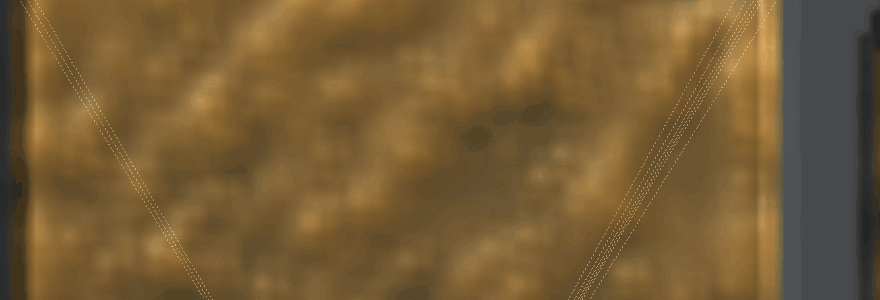
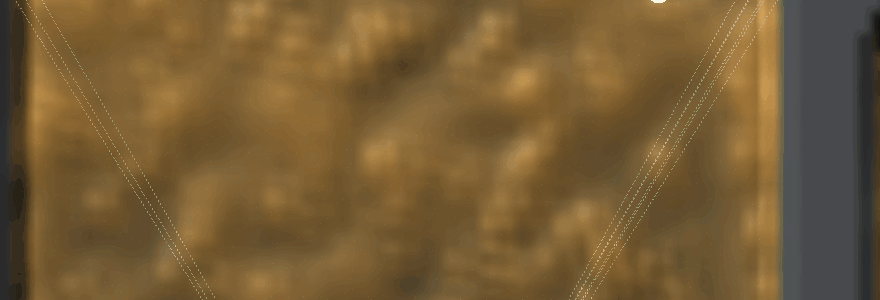
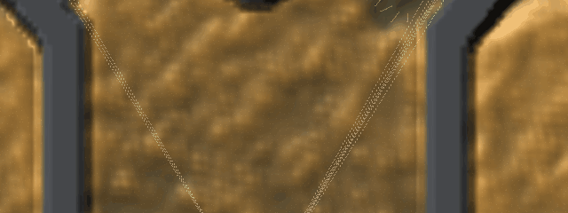
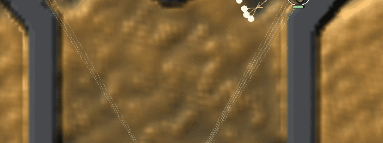
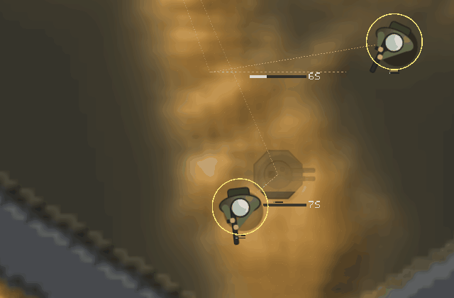
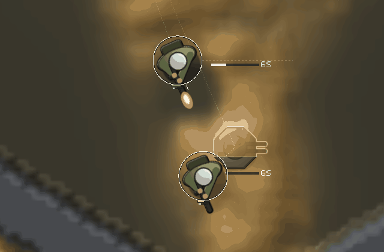
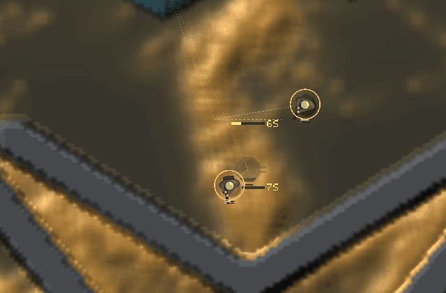
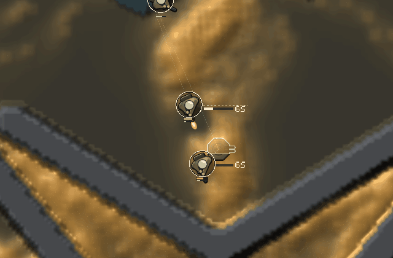
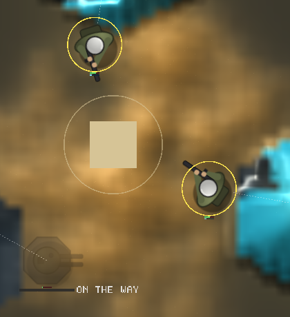
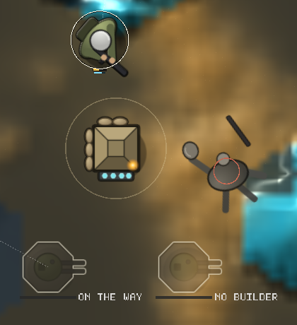

<title>Squad You Can Count</title>
<meta name="claude:viewport-fit-sides" content="cover">
<link rel="stylesheet" href="https://fonts.googleapis.com/css2?family=Space+Grotesk:wght@500;700&family=Inter:wght@400;600&family=JetBrains+Mono:wght@400&display=swap">
<style>
/* Layout: one column of before/after pairs, the counts beside each pair. */
:root {
  --bg: #f3f1ea; --fg: #1d1c18; --muted: #5d5a50; --line: #d6d1c2; --panel: #e9e5d8; --accent: #6b7a3a;
  --display: "Space Grotesk", system-ui, sans-serif; --body: "Inter", system-ui, sans-serif; --mono: "JetBrains Mono", ui-monospace, monospace;
}
@media (prefers-color-scheme: dark) { :root:not([data-theme="light"]) { --bg: #16150f; --fg: #ece8da; --muted: #a8a390; --line: #34322a; --panel: #1f1e17; --accent: #a8b86c; color-scheme: dark } }
:root[data-theme="dark"] { --bg: #16150f; --fg: #ece8da; --muted: #a8a390; --line: #34322a; --panel: #1f1e17; --accent: #a8b86c; color-scheme: dark }
body { background: var(--bg); color: var(--fg); font: 15px/1.55 var(--body); }
main { max-width: 1100px; margin: 0 auto; padding-block: 28px 60px; padding-left: max(16px, env(safe-area-inset-left, 0px)); padding-right: max(16px, env(safe-area-inset-right, 0px)); display: grid; gap: 34px; }
h1, h2 { font-family: var(--display); text-wrap: balance; margin: 0; }
h1 { font-size: 30px; }
h2 { font-size: 20px; }
p { margin: 0; max-width: 70ch; }
.lede { color: var(--muted); }
section { display: grid; gap: 12px; border-top: 1px solid var(--line); padding-top: 20px; }
.pair { display: grid; grid-template-columns: 1fr 1fr; gap: 14px; }
@media (max-width: 760px) { .pair { grid-template-columns: 1fr; } }
figure { margin: 0; display: grid; gap: 6px; min-width: 0; }
figure img { width: 100%; border-radius: 4px; background: var(--panel); }
figcaption { font-size: 13px; color: var(--muted); }
.tag { font: 11px var(--mono); letter-spacing: .08em; text-transform: uppercase; color: var(--accent); }
ul { margin: 0; padding-left: 20px; max-width: 75ch; }
code { font: 13px var(--mono); }
</style>
<main>
  <header style="display:grid;gap:8px">
    <span class="tag">Larder World · units and buildings · 2026-11-14</span>
    <h1>Every soldier countable at zoom 6</h1>
    <p class="lede">Fork map, seed 1, shape C, headless on llvmpipe at 1280×800, cropped. Left is main (3d31dd3), right is this branch. Clips play at half speed of the frames taken (every other frame of 15 a second).</p>
  </header>

  <section>
    <h2>The volley at zoom 12 (0:21 to 0:24, shrapnel rounds)</h2>
    <p>Main: 9 soldiers, 7 of them within one figure of each other, so the window shows about 2 figures and a stack of yellow rings. This branch: 9 figures, 3 and 6, each helmet separate. The squad keeps elbow room of 1.6 touch radii in the walk itself, so the picture is still where each soldier is.</p>
    <div class="pair">
      <figure><figcaption>Main · 9 soldiers, about 2 figures readable</figcaption></figure>
      <figure><figcaption>This branch · 9 soldiers, 9 figures</figcaption></figure>
    </div>
  </section>

  <section>
    <h2>The same volley at zoom 6</h2>
    <p>Figures are drawn 1.15 touch radii (at least 10 pixels), lighter olive, with a dark 1.5-pixel outline that parts them from the gold slime and a cream rim light toward the top-left light. Selection is a thin cream ring over a dark one. Health bars show only under 95% health, green, amber under 60%, red under 30%, drawn over every figure.</p>
    <div class="pair">
      <figure><figcaption>Main · olive discs under heavy yellow rings</figcaption></figure>
      <figure><figcaption>This branch · outlined figures, thin rings</figcaption></figure>
    </div>
  </section>

  <section>
    <h2>A turret rising (far hand, 0:07 to 0:11, zoom 12 then 6)</h2>
    <p>A ghost is now a cream plan on the dark ground; the risen part fills from its foot at nearly full colour with a cream seam where it is rising, so the progress is in the sprite and not only in the bar. Before, a ghost was a faint dark shape that was lost on dark ground. Standing buildings get the same dark outline as soldiers and scorch as they are hurt.</p>
    <div class="pair">
      <figure><figcaption>Main · zoom 12</figcaption></figure>
      <figure><figcaption>This branch · zoom 12</figcaption></figure>
      <figure><figcaption>Main · zoom 6</figcaption></figure>
      <figure><figcaption>This branch · zoom 6</figcaption></figure>
    </div>
  </section>

  <section>
    <h2>The larder and the dead (build hand, 0:20, zoom 12)</h2>
    <p>The larder was a beige square; it is now a store in sprite A's style, its four charge cells lit cyan while the bank holds food, scorching as the mould holds it with the bank dry. A dead soldier was the live body turned 20 degrees; now it lies flat in cold greys, limbs flung, helmet rolled off and rifle dropped, with no outline, rim or shadow.</p>
    <div class="pair">
      <figure><figcaption>Main · bank 511, one soldier fallen</figcaption></figure>
      <figure><figcaption>This branch · bank 511, one soldier fallen</figcaption></figure>
    </div>
  </section>

  <section>
    <h2>Cost and what changed in the rules</h2>
    <ul>
      <li>llvmpipe, <code>bench=30 hand=volley</code>, 1280×800: GPU tail p50 37.6 → 40.2 ms, frame p50 47.0 → 49.9 ms (software Vulkan, the squad on screen; the 1070 timing waits for the PC).</li>
      <li>Elbow room (<code>Rules::elbow</code> 1.6, 0 is off) and sunflower slots 2.5 dish cells a ring (was 1.5): a census baseline break, since the squad's drain spreads over more ground. Builders pushed aside still raise their building.</li>
    </ul>
  </section>
</main>
